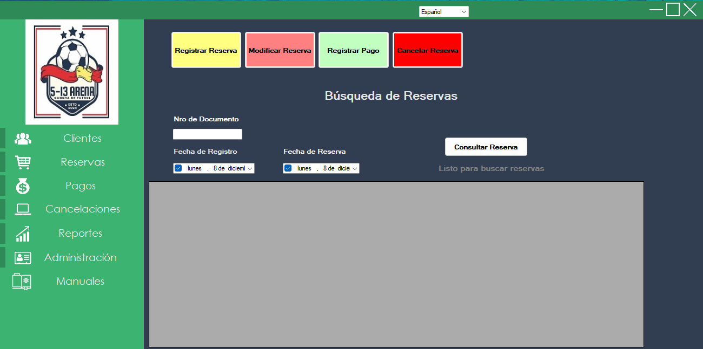
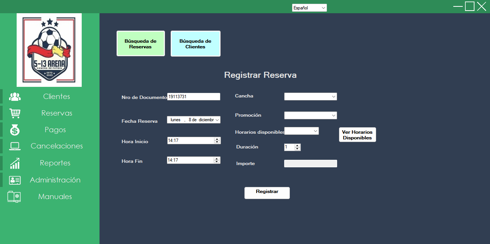
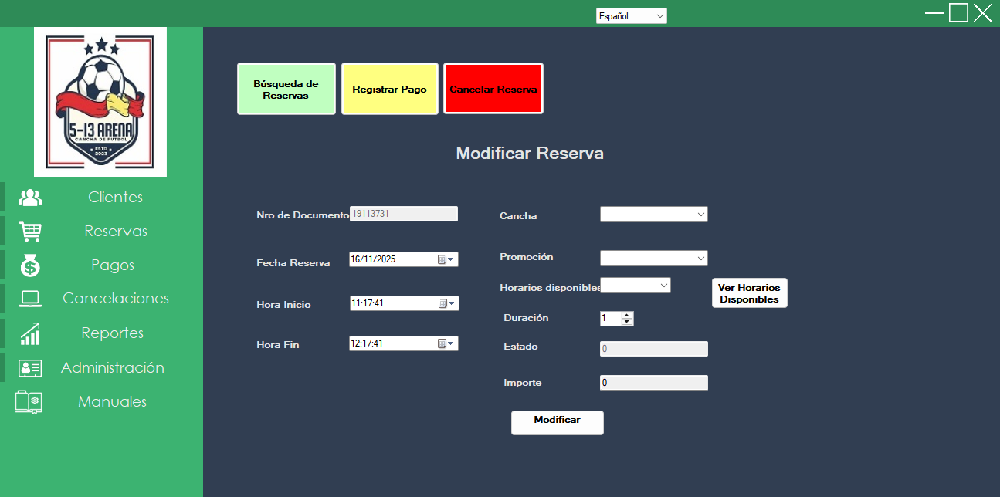

3.2 Módulo de Ventas – Reservas
3.2.1 Búsqueda de Reservas
En este módulo se crean, buscan, editan y cancelan reservas; además, se registran pagos asociados.
Filtros disponibles:
- Nro de Documento
- Fecha de Reserva
- Fecha de Registro
Presione Consultar Reserva para ver la grilla de resultados.
El estado de la reserva se indica por colores: verde (Confirmada), rojo (Cancelada) y otros (Pendiente).

3.2.2 Registrar Reserva
- Desde Ventas – Clientes, modifique o confirme los datos del cliente.
- Vaya a Ventas – Reservas y seleccione Registrar Reserva.
- Complete cancha, fecha, horario y, opcionalmente, una promoción.
- Luego de seleccionar la fecha, presione Ver horarios para visualizar los horarios disponibles.
- El importe se completa automáticamente según la cancha y la promoción seleccionada.

3.2.3 Modificar Reserva
- Desde Ventas – Clientes, modifique o confirme los datos del cliente.
- Vaya a Ventas – Reservas y seleccione Modificar Reserva.
- Actualice los campos que desee: cancha, fecha, horario y promoción (opcional).
- Al seleccionar la fecha, presione Ver Horarios Disponibles para cargar los horarios libres.
